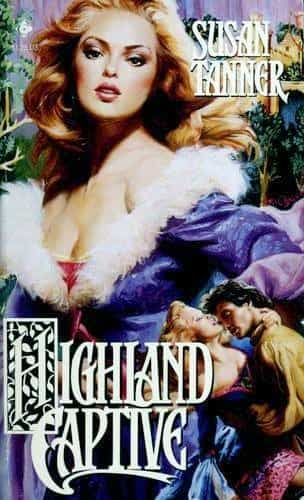

Hey kids, let’s talk about rape! It’s apparently all the rage nowadays, with the shrieking yentas that run the world in the 21st century never ceasing to stop talking about the awful awfulness of our rape culture in the rapey rapeosphere that is modern Rapemerica.
And while greatly exaggerated thanks to paranoia, there is some truth to this: the recent revelations coming out of Hollywood with the old “casting couch” suggest that, at the very least, some industries have a problem with sexual harassment and assault, despite the constant exhortations for us to “listen and believe” and what have you.
Apparently, we didn’t do this enough.
And yet, despite all this hysteria over rape and how women are all in fear of it… they really seem to fantasize about it one whole hell of a lot. Yes, even in these enlightened times of strong independent womyn, these same strong women flocked in droves to bookstores and movie theaters to “enjoy” (wink, wink) works such as Fifty Shades of Grey, practically sliding on a mollusk-like mucus trail of sheer vaginal ejaculate.
And this is hardly a new thing: as I’ve pointed out in this article, the 1919 novel The Sheik is essentially the exact same story as Fifty Shades of Grey, except for the fact that the studly Dark Triad man is an Arab rather than a white man. And that too had a silent movie franchise funded by millions of women with drenched panties.
The reason I point all of this out is that, clearly, women—or at the very least a small subset of women—luuuuurve them some violent sexual fantasies. The question is: why exactly is this the case? And more importantly, how can you use these fantasies in a law abiding manner to your sexual advantage?
Science!
Researchers at the University of North Texas asked 355 undergraduates of all races and socioeconomic backgrounds whether they had had various types of rape fantasies of both heterosexual and homosexual variants, and two-thirds of women had at least occasional fantasies of being violated against their will.
Needless to say, I nor any of my neo-masculine peers—despite allegations of the contrary—advocate the actual forced violation of a woman, nor do most men period, so it’s not likely a woman who uses common sense and avoids shady and/or violent men will get raped. Thus the old theory that the fantasies were merely sublimated desires to actually be raped that men would act upon is likely not true.
In researching this issue, two explanations in particular seem to be quite prevalent in the various studies I read for this article; one being that rape fantasies tap into a woman’s desire to avoid sexual blame, and the other that women enjoy being an object of desire by men.
The former essentially states that women are “shamed” for feeling sexual desire and fantasizing about sex, thus they sublimate that patriarchal guilt into fantasies of being “forced” into it, thus allowing them to fantasize about getting plowed without feeling like a slut for “wanting” it.
While there may have been some truth to this as late as the 90s (what else were those trashy supermarket romance novels with Fabio on the cover targeting?), I highly doubt this is the case nowadays. If the 21st century is anything, it is not, in the West, at least, a century that oppresses women’s right to their sexuality. In fact, they’re pretty clearly flaunting it.
So no, I don’t think the lumpy slatterns participating in SlutWalks feel guilty for having sexual fantasies. And let’s not forget that in most cases the people shaming women for being sluts are and always have been… other women.
Instead, I think that the other explanation is much closer to the truth: that women like to imagine themselves as maddening objects of desire that can drive men to acts of animalistic sexuality. Women fantasize about their bodices being ripped rather than having the man politely ask to take it off, after all.

It’s not titled “Highland Yes Means Yes Consent Form,” now is it?
In truth, I wouldn’t be surprised if this was the root cause of the “rape culture” hysteria: while there is that element of wanting to control male sexuality that I have discussed, women believe in rape culture because they want to believe in it. If we live in a culture where rape is common and celebrated, then that means the streets are just teeming with sweaty, brutal men that all will froth at the mouth and fight tooth and nail just to take yon fair damsel over the nearest table.
Presumably any women reading this just got a little hot and bothered at reading that last paragraph.
I don’t care what you say: this title is amazing.
Using It To Your Advantage
To explain how to use rape fantasies to your advantage, we first have to list one more possible explanation for them, which is my own theory that still vaguely ties into the last explanation. My theory is that rape fantasies are an extreme exaggeration of what you actually want in your sex life.
What I mean by this is the fact that intellectually, women don’t want to be beaten down and violated, but emotionally and vaginally, they certainly don’t want a meek, mewling soy eater who gives them boring sex. Indeed, being the latter is worse than being the former; women will leave a boring, pathetic beta male long before they leave an abuser (no, I am not advocating you abuse women). What they want in reality is sex that’s rough and “high-energy,” but not to the point of actual violence.
Similarly, men may fantasize about something like being locked in a royal harem and plowing every one of those concubines, but were this to occur in real life, the man would have sex with two or three of them and then humiliate himself when he failed to get it up any more. That would kill the mood really quick, and that’s why it’s a fantasy.
So how do you use the rape fantasy to your advantage? It’s simple: get a little rough and wild in the bedroom, and use the acrobatic and aggressive “three-way dance” maneuver. Perhaps do an actual rape role-play. The key to remember is this: don’t be a boring beta male in bed. If you remember that women have fantasies about idealized, extremely violent sex, modulate it a little bit and use it to keep the women coming back!
If women do have this psychological quirk, why not use it to your and her mutual benefit?
Read More: The Guardian’s Nicole Silverberg Tells Men to Believe All Rape Claims and Always Apologize to Women